Visual communication for a tele-health vision monitoring game used by ophthalmologists across France. From press kit to app UX assets — translating medical data into language patients and clinicians can act on together.
OdySight is a certified medical device — an iOS and Android game that lets patients monitor their own vision between clinic appointments. The app measures visual acuity, contrast sensitivity, and scotoma detection, sending results securely to their doctor.
My role spanned the full communication ecosystem: press and media materials, the product packaging and onboarding experience, and social media content. Working closely with the clinical and product teams in a small international office, I had to make technically complex medical concepts feel intuitive to patients in their 60s and 70s.
Developed promotional visuals and App Store preview assets for OdySight, translating existing in-app screens and vision test features into engaging visual materials for product marketing and patient communication in English and French.
The press kit had to serve two very different audiences simultaneously: journalists covering health tech, and clinicians evaluating OdySight as a diagnostic tool. I designed a document that could move between both — visual and engaging for press, rigorous and data-forward for clinical contexts.
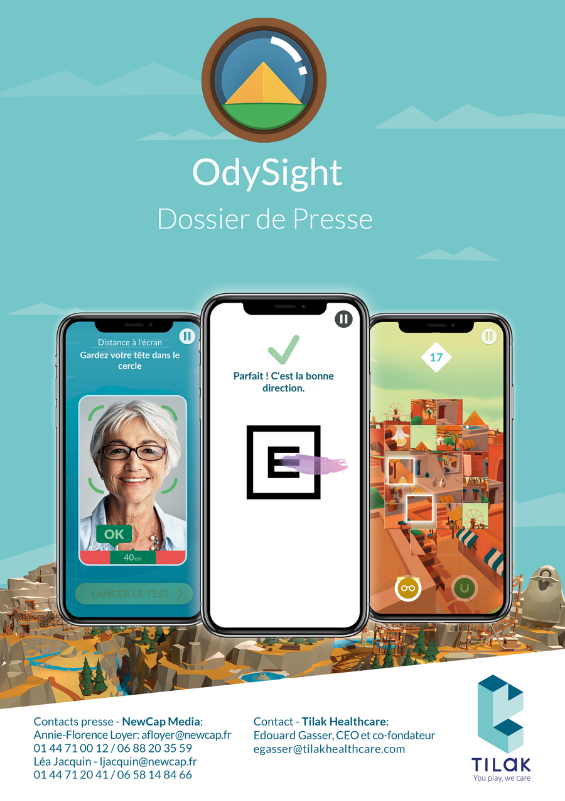
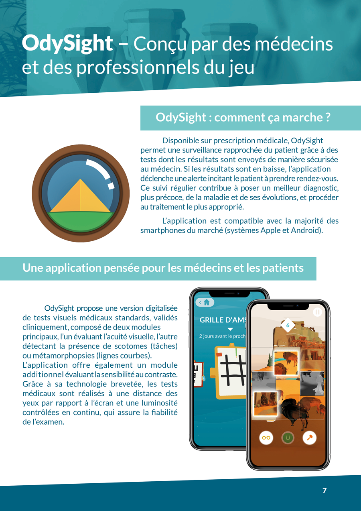
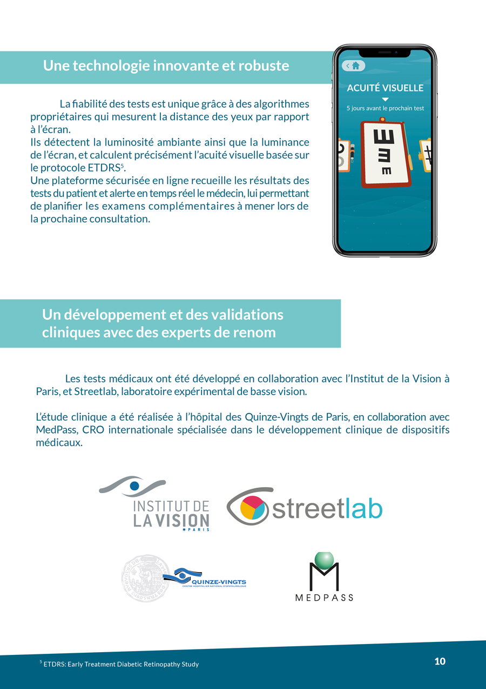
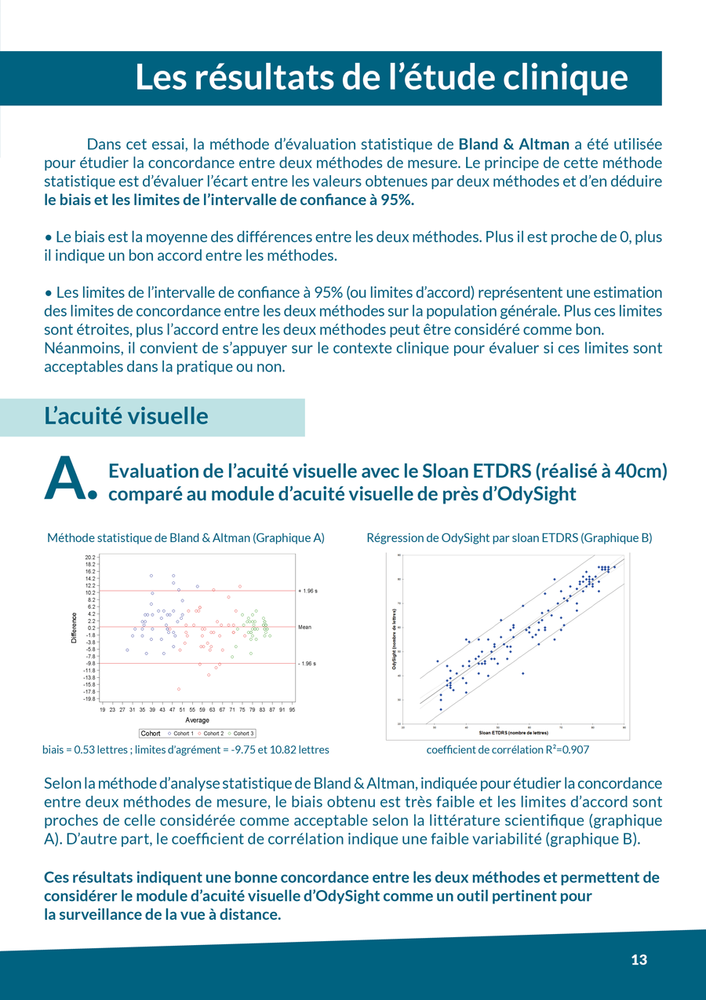
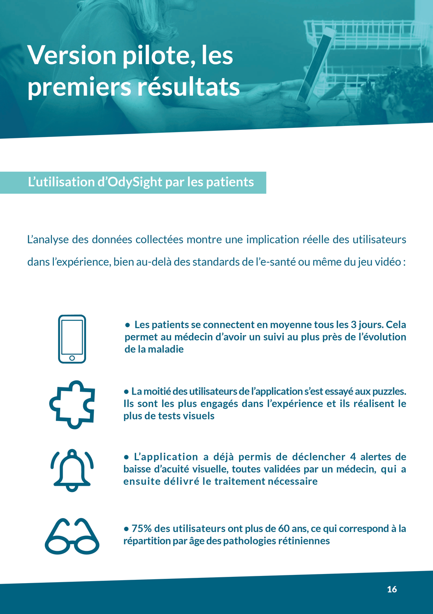
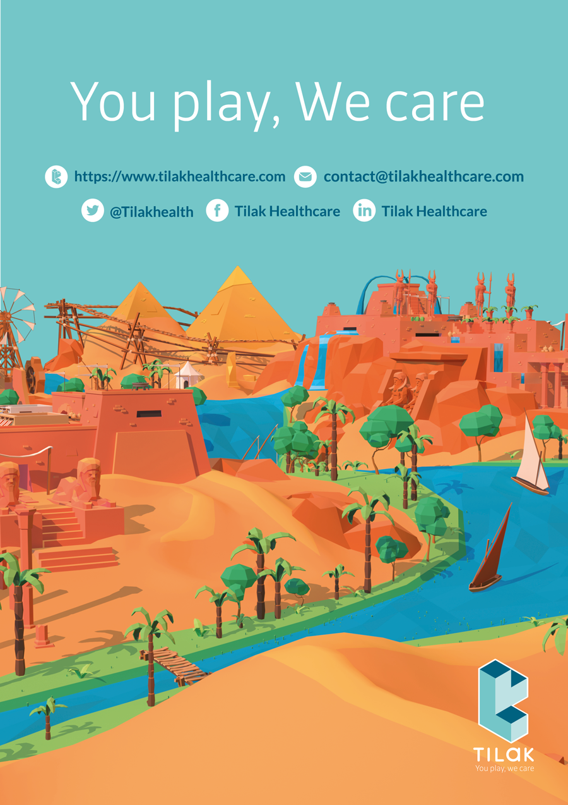
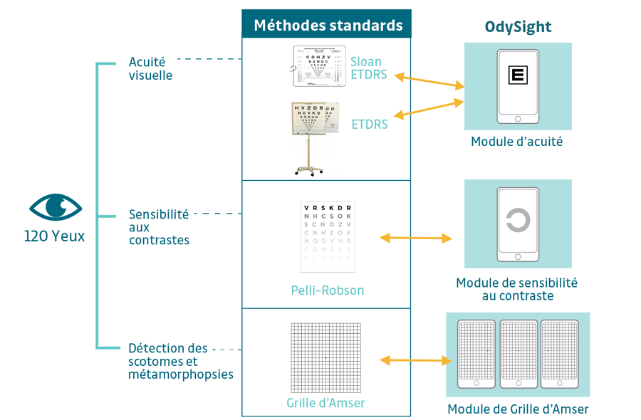
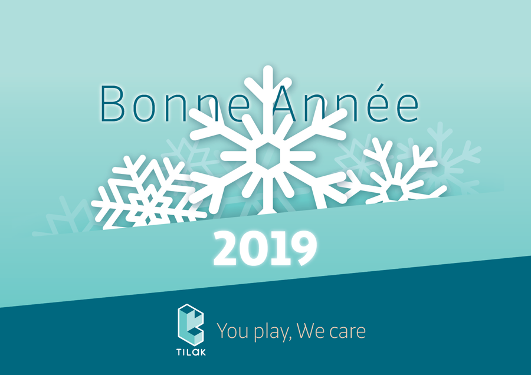
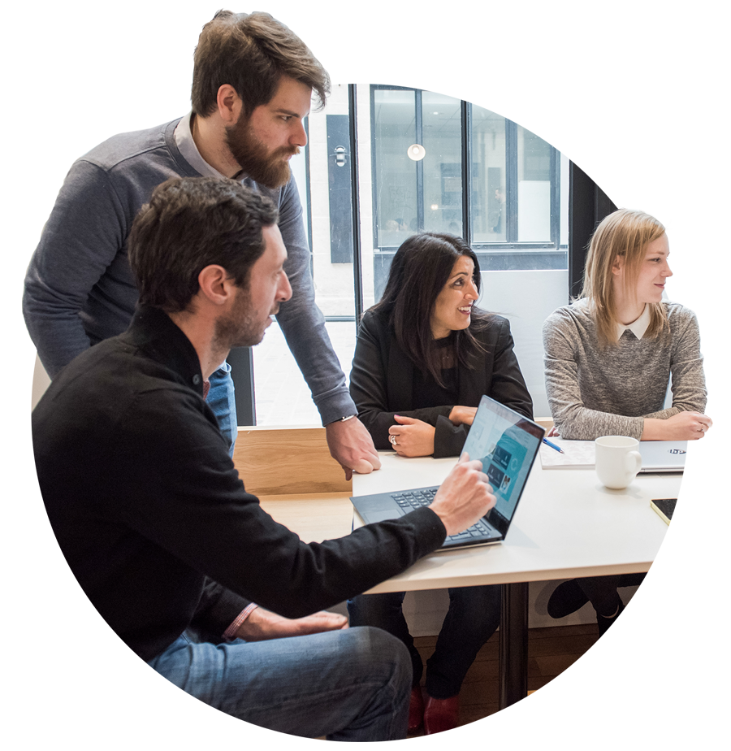
OdySight was delivered as a physical kit — a blue cardboard box with a built-in phone stand, sent directly to patients. The onboarding experience had to work without a support person present. I designed the step-by-step instruction illustrations to be icon-driven and language-independent, reducing the barrier for older patients unfamiliar with apps.
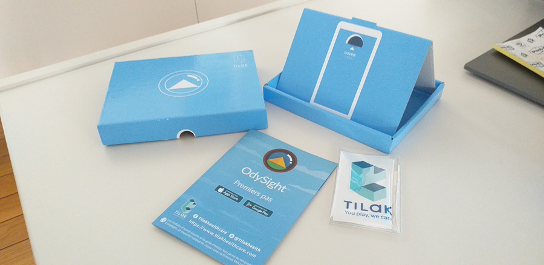
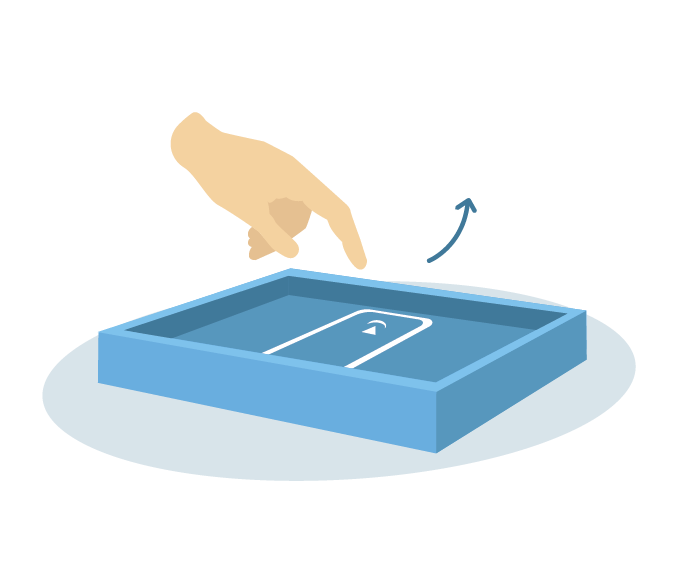
Open the box and lift the phone stand
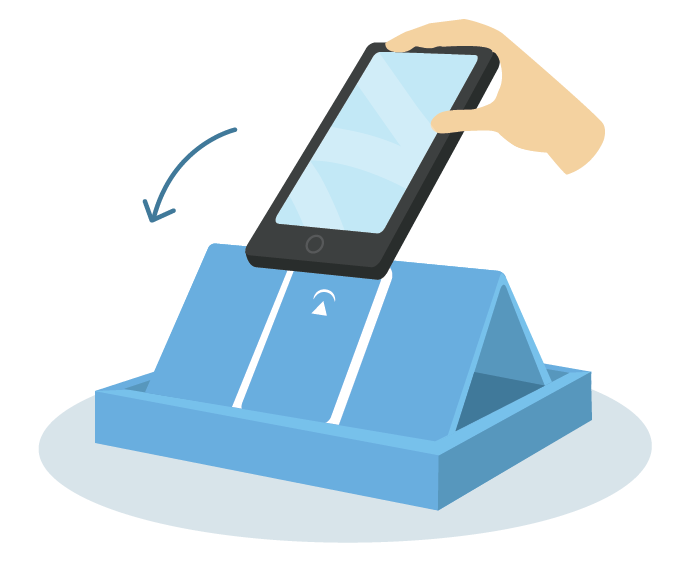
Place your smartphone in the stand
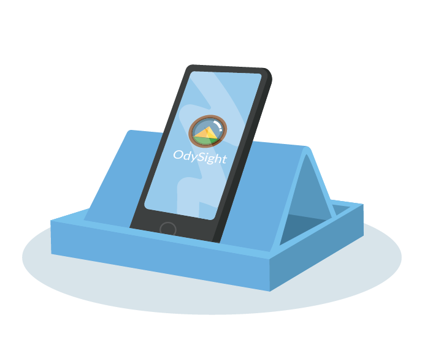
Open OdySight and start your test